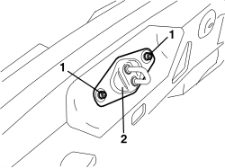
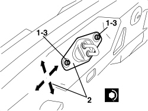

7015B18 TAILGATE LOCK STRIKER - R+R
- Path
- Procedures > 70 FITTINGS > 7015 TAILGATE/FLAP > 7015B TAILGATE CLOSING/OPENING DEVICES > 7015B18 TAILGATE LOCK STRIKER - R+R
- Kind
- repair procedure (removal / refitting; the operation number is the code)
- Applies to
- all engines; all production periods
- Interactive page
- https://sloeber94.github.io/elrnDB-aBrrSpdr/en/#/946002554
Applies to: all engines; all production periods
 Removing
Removing
 Refitting
RefittingOp. 7040B22 LUGGAGE COMPARTMENT/LOAD PLATFORM MOULDING - R+R
1. Undo the bolts.
2. Remove the striker.

Applies to: all engines; all production periods
Refitting
Removing- Check that the striker is not damaged.
1. Place the striker in position and screw in the bolts without tightening them.
2. Adjust the position of the striker; the arrows show the possible movements.
3. Tighten the bolts.
Component | Fastening | dia | Value (daNm) | Validity |
|---|---|---|---|---|
TAILGATE STRIKER | Bolt | M6x16.5 | 0.7 ÷ 1.1 |

Applies to: all engines; all production periods
Op. 7040B22 LUGGAGE COMPARTMENT/LOAD PLATFORM MOULDING - R+R